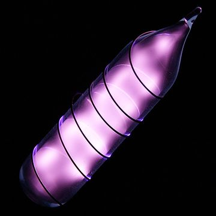

Hel (He, łac. helium) – pierwiastek chemiczny z grupy gazów szlachetnych. Jest po wodorze drugim najbardziej rozpowszechnionym pierwiastkiem chemicznym we wszechświecie, jednak na Ziemi występuje wyłącznie w śladowych ilościach.
Hel na Ziemi występuje głównie w atmosferze, pochodzi z rozpadu jąder promieniotwórczych w naturalnych szeregach promieniotwórczych. W litosferze hel występuje również w niektórych złożach gazu ziemnego. Praktycznie cały hel, który mógł pierwotne istnieć na Ziemi, nie mogąc związać się z żadnym innym pierwiastkiem, jako bardzo lekki, opuścił atmosferę Ziemi.
Występuje w postaci dwóch izotopów trwałych.
Hel jest najmniej aktywnym pierwiastkiem chemicznym, z bardzo wysoką energią jonizacji . Nie udało się z nim uzyskać żadnego trwałego związku chemicznego . Nie ma żadnego znaczenia biologicznego.

Hel świecący w silnym polu elektrycznym